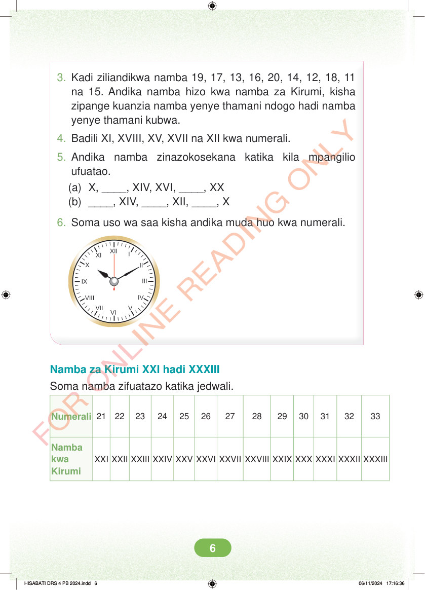

<!DOCTYPE html>
<html lang="sw-TZ"><head><meta charset="utf-8"><meta name="viewport" content="width=device-width,initial-scale=1">
<title>Hisabati: Kitabu cha Mwanafunzi Darasa la Nne</title>
<meta name="title-id" content="pg012_sec001"><meta name="page-section-id" content="12">
<link href="./content/tailwind_output.css" rel="stylesheet"><link href="./assets/libs/fontawesome/css/all.min.css" rel="stylesheet"><link href="./assets/fonts.css" rel="stylesheet">
<style>body{margin:0;background:#eef1ed}main{width:100%;display:flex;justify-content:center;padding:1rem 1rem 5rem;box-sizing:border-box}#content{width:100%;display:flex;justify-content:center}.pdf-page{position:relative;width:min(calc(100vw - 2rem),56rem);aspect-ratio:540.8980102539062/750.6610107421875;background:white;box-shadow:0 4px 24px #0002;overflow:hidden}.pdf-page img{position:absolute;inset:0;width:100%;height:100%;object-fit:fill}</style>
</head><body><main><h1 class="sr-only" id="page-heading">Ukurasa wa 12</h1><div id="content" class="opacity-0"><section role="article" data-section-type="pdf_accessible_page" data-section-id="pg012_sec001" aria-labelledby="page-heading" class="pdf-page"><p class="sr-only" data-id="pg012_gp001_tx001">3. Kadi ziliandikwa namba 19, 17, 13, 16, 20, 14, 12, 18, 11 na 15. Andika namba hizo kwa namba za Kirumi, kisha zipange kuanzia namba yenye thamani ndogo hadi namba yenye thamani kubwa. 4. Badili XI, XVIII, XV, XVII na XII kwa numerali. 5. Andika namba zinazokosekana katika kila mpangilio ufuatao. (a) X, ____, XIV, XVI, ____, XX (b) ____, XIV, ____, XII, ____, X 6. Soma uso wa saa kisha andika muda huo kwa numerali. Namba za Kirumi XXI hadi XXXIII Soma namba zifuatazo katika jedwali. Numerali 21 22 23 24 25 26 27 28 29 30 31 32 33 XXI XXII XXIII XXIV XXV XXVI XXVII XXVIII XXIX XXX XXXI XXXII XXXIII Namba kwa Kirumi HISABATI DRS 4 PB 2024.indd 6 HISABATI DRS 4 PB 2024.indd 6 06/11/2024 17:16:36 06/11/2024 17:16:36</p></section></div></main><div class="relative z-50" id="interface-container"></div><div class="relative z-50" id="nav-container"></div><script src="./assets/offline-preloader.js?v=audiofix-20260824-1"></script><script src="./assets/scorm.js"></script><script src="./assets/base.bundle.local.js?v=audiofix-20260824-1"></script></body></html>